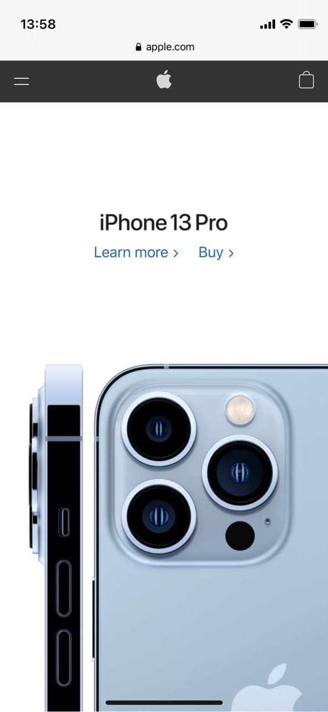

Alignment
Warp
warp.byThis website demonstrates the alignment principle. The header and the main images has a vertical alignment and header with main sections has a horizontal alignment.
Repetition
Onliner
onliner.byThis website demonstrates the repetition principle. Each image has in the left corner the news topic in the yellow box and below has a title in the same typeface with the same color.
White Space
Apple
apple.com This website demonstrates the white space principle. We can see just two small hyperlinks on the top with the title and lower we can see the main object on which users have to focus.